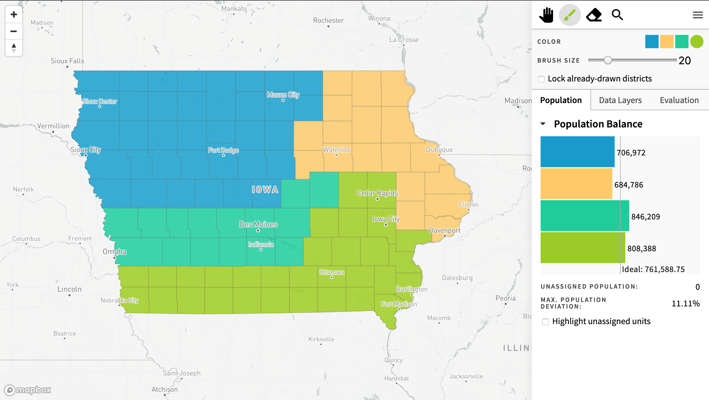
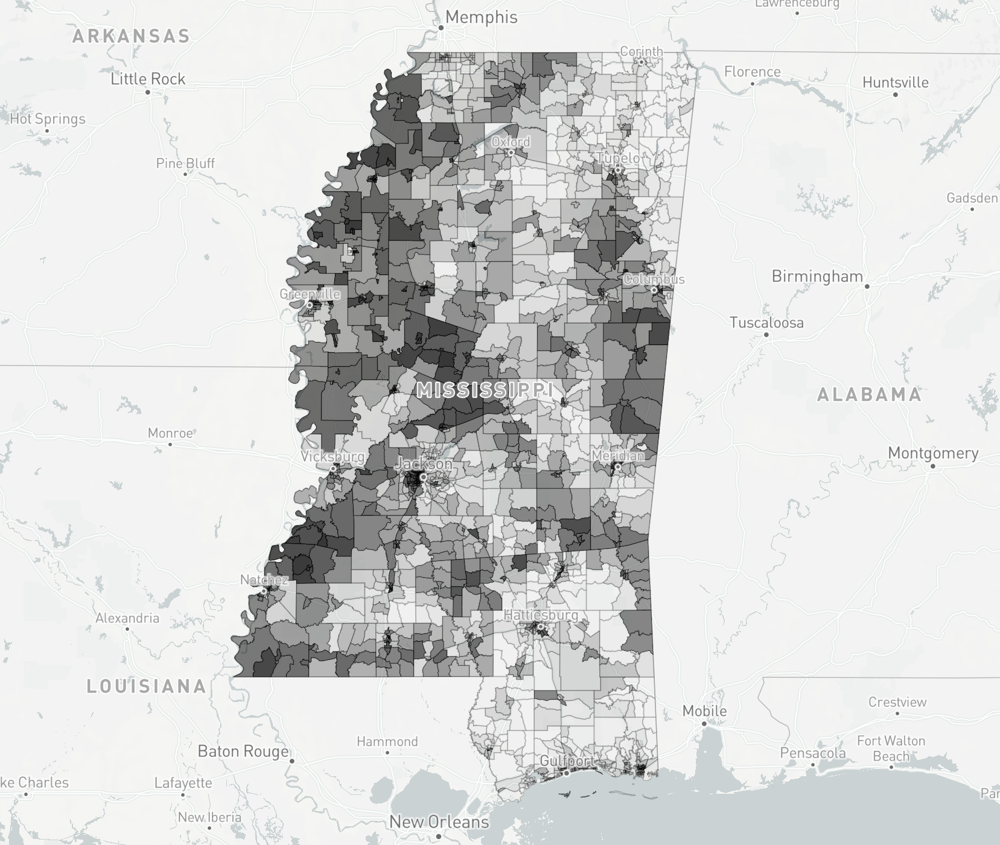

Redistricting Rules
Every ten years, the United States government attempts to count every person living in the country, something known as the Census. After the Census, states are required to redraw the districts of their state and federal legislatures in order to account for the change in population and movement of people across the country. Although all states are redraw districts after the Census, the rules for redistricting vary greatly from state to state. This article asks users to interact with Districtr and A Citizen's Guide To Redistricting to learn about the different rules of redistricting.
Population Balance
Population balance is one of the few rules of redistricting that is clear-cut and followed by every state. In a series of cases known as the “one person, one vote” cases, the Supreme Court ruled that each district’s population must be about equal.
A balanced population has a different meaning depending on the state. Thus, population deviation is an important part of ensuring that each district adheres to the state's respective definition.
Here are some basic definitions for calculating population deviations.
Ideal (average) population is the average population of districts in a state.
Deviation is the percentage by which population differs from the mean.
Average deviation is the average of deviations of districts (i.e., ∑districts deviations/ total number of districts).
Total deviation is the difference between the maximum and minimum deviations (i.e., total deviation = maximum deviation - minimum deviation).
Now consider a Districtr generated plan for Iowa.
The follwoing table shows the population deviation of each district in the above proposed map of Iowa.
| Districts | Population | Deviation |
|---|---|---|
| 1 | 706,972 | 7.17% |
| 2 | 808,388 | -6.14% |
| 3 | 846,209 | -11.11% |
| 4 | 684,786 | 10.08% |
| Average | 761,588.75 | 8.63% |
| Total | 3,046,355 | 21.20% |
For more information on population bound, click here. Below are some population bounds that show the variety of definitions of population deviations for some states based on A Citizen's Guide To Redistricting.
| State | # of districts | Accepted Deviation |
|---|---|---|
| CO | 7 | ≤ 5% total deviation |
| IA | 4 | ≤ 5% total deviation |
| MN | 8 | ≤ 2% from ideal deviation |
| MT | 8 | ≤ 1% from ideal deviation |
| UT | 4 | ≤ 4% from ideal deviation |
| VA | 11 | ≤ 2% from ideal deviation |
Now, it is your turn! Based on the above table, draw a districting plan for Iowa while respecting the population balanced!
Maintaining a balanced population has pros and cons:| Pros | Cons |
|---|---|
| Each person has the same representation as every other person | Communities may need to be split up |
| Each person has the same voting power to elect a representative as every other person | Districts could end up looking strange |
| Easy standard for line-drawers to follow that is easily reviewable by courts | Harder for there to be districts that gives minority citizens the opportunity to elect a representative |
Contiguity
A contiguous district is one where you can travel from any point to any other point within the district without leaving.
There are two types of contiguity: (i) rook, and (ii) queen. In rook contiguity, two land parcels of a district are adjacent if they share a border, not a point. In queen contiguity, two land parcels of a district are adjacent if they share a point or a border.
Use the following Districtr module to fix the Mississippi districting plan so that each district is rook contiguious and the population balance is respected.
Compactness
Many states have constitutional requirements that all districts must be compact in some way. However, compactness is not clearly defined when it comes to redistricting. Thus, the law is open to a wide variety of interpretations.
The “eye-ball test” has become a convention many people use to determine compactness: if a district looks compact, then it is compact.
The most compact shape is a circle. Districts are difficult to draw as circles due to the geography of most states. As such, people have developed various ways to quantify compactness such as the Polsby-Popper score or dispersion-based measures. For more information, consult with A Citizen's Guide To Redistricting.
Cut edges is another measure of compactness that considers number of edges between different districts. The fewer number of cut edges in a districting plan, the more compact it is. The following districting plans contain blue and beige districts where each district has 9 nodes but the plans have a different number of cut edges.

An indication of gerrymandering in a redistricting plan are strange, snake-like districts that do not pass the eye-ball test. Below is North Carolina’s 2011 redistricting plan. Federal judges ruled it unconstitutional because it unfairly favored Republicans. Try to change the plan to make all of the districts more compact while respecting contiguity and population balance!
Packing and Cracking
Packing is cramming people with the same partisan interest into one district to dilute their voting strength. If all of one party or demographic ispacked into one district, then it weakens their voting power in other parts of the state.
Cracking is dividing a group of people with same partisan interest into different districts. This decreases the voting strength of the group to win a district. Cracking is normally implemented by splitting relatively homogenous communities.

Based on the map above try to create a districting plan that packs the black population in Mississippi!
Below is a real world districting plan where North Carolina packs and cracks Democrats throughout the state to dilute their voting power.
Based on the map of districts in North Carolina, you can see Democrat packing in Districts 2 and 11.